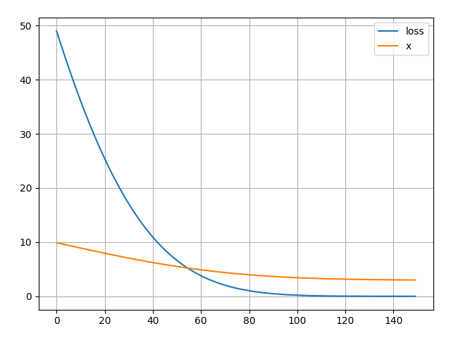

2.6 Optimizer
Created Date: 2025-06-23
There are many optimizers available for machine learning and deep learning, with the exact number being difficult to pinpoint as new ones are constantly being developed and existing ones are adapted. However, some popular and well-established optimizers include Gradient Descent (and its variations like Stochastic Gradient Descent and Mini-batch Gradient Descent), Adagrad, RMSprop, Adam, and Adadelta. The choice of optimizer often depends on the specific problem, dataset size, and desired convergence speed.
The image visually explains how an optimizer works by iteratively adjusting a parameter (w) from a random starting point to find the value that minimizes the loss function.

Figure 1 - Optimizer
We can set a constant learning rate of 0.001, or adjust the learning rate during training, which leads to different types of optimizers.
Here's a breakdown of some key optimizer categories and examples:
1. Gradient Descent Based Optimizers
Gradient Descent: The foundational optimizer that iteratively adjusts model parameters to minimize a loss function by moving in the direction of the steepest descent of the gradient.
Stochastic Gradient Descent (SGD): Updates parameters using the gradient calculated on a single randomly selected data point (or a mini-batch). This is generally faster than vanilla gradient descent for large datasets.
Mini-batch Gradient Descent: A variation of SGD that uses a small batch of data points for gradient calculation, offering a balance between speed and stability.
2. Adaptive Learning Rate Optimizers
Adagrad: Adapts the learning rate for each parameter based on the historical sum of squared gradients.
RMSprop: Divides the learning rate by a moving average of the past squared gradients, making it suitable for non-convex problems.
Adam: Combines the benefits of RMSprop and momentum by using exponentially decaying averages of past gradients and past squared gradients. It's often a good starting point for many deep learning tasks.
3. Other Notable Optimizers
Adadelta: An extension of Adagrad that addresses its diminishing learning rate issue by using a moving average of past updates.
AdamW: A variant of Adam that decouples weight decay from the learning rate update, often leading to better generalization.
Lion: A recently developed optimizer that addresses some limitations of Adam and is gaining traction.
The best optimizer for a specific task is often determined through experimentation and by considering factors like the dataset size, the complexity of the model, and the desired convergence speed.
2.6.1 Basic Usage
To use torch.optim you have to construct an optimizer object that will hold the current state and will update the parameters based on the computed gradients.
To construct an Optimizer you have to give it an iterable containing the parameters (all should be Parameter s) or named parameters (tuples of (str, Parameter)) to optimize. Then, you can specify optimizer-specific options such as the learning rate, weight decay, etc. Example:
optimizer = torch.optim.SGD(model.parameters(), lr=0.01, momentum=0.9)
optimizer = torch.optim.Adam([var1, var2], lr=0.0001)All optimizers implement a step() method, that updates the parameters. It can be used in two ways:
optimizer.step()This is a simplified version supported by most optimizers. The function can be called once the gradients are computed using e.g. backward() .
for input, target in dataset:
optimizer.zero_grad()
output = model(input)
loss = loss_fn(output, target)
loss.backward()
optimizer.step()Some optimization algorithms such as Conjugate Gradient and LBFGS need to reevaluate the function multiple times, so you have to pass in a closure that allows them to recompute your model. The closure should clear the gradients, compute the loss, and return it:
for input, target in dataset:
def closure():
optimizer.zero_grad()
output = model(input)
loss = loss_fn(output, target)
loss.backward()
return loss
optimizer.step(closure)2.6.2 Stochastic Gradient Descent (SGD)
Stochastic Gradient Descent (SGD) is an optimization algorithm used to minimize a loss function by updating the model’s parameters \(\theta\) in the direction of the negative gradient. It is a stochastic (randomized) version of standard gradient descent that updates parameters using only one data point at a time, rather than the entire dataset.
The update rule is:
where \(\eta\) is the learning rate, \(\eta\) is learning rate, \(\nabla_\theta L_i(\theta)\) is the gradient of the loss function \(L\) with respect to the parameters \(\theta\) for the \(i\)-th data point.
File simple_sgd.py show a simple example:
# training data
x = 1
y = 2
w = 0
leanring_rate = 0.1
y_pred = w * x
loss = (y_pred - y) ** 2
dw = 2 * (w * x - y) * x
w = w - leanring_rate * dw
print(f"w: {w}, loss: {loss}")w: 0.4, loss: 4
In PyTorch, you can use the torch.optim.SGD class to implement SGD.
# implementation with torch
x = torch.tensor(1.0)
y = torch.tensor(2.0)
# weight parameter with gradient tracking
w_torch = torch.tensor(0.0, requires_grad=True)
# define optimizer
optimizer = torch.optim.SGD([w_torch], lr=0.1)
# forward pass
y_pred = w_torch * x
loss = (y_pred - y) ** 2
# backward pass
loss.backward()
optimizer.step()
assert torch.isclose(w_torch, torch.tensor(w), atol=1e-6)2.6.2 Adam
We propose Adam, a method for efficient stochastic optimization that only requires first-order gradients with little memory requirement. The method computes individual adaptive learning rates for different parameters from estimates of first and second moments of the gradients; the name Adam is derived from adaptive moment estimation.
Algorithm: Adam, our proposed algorithm for stochastic optimization, and for a slightly more efficient (but less clear) order of computation. \(g_t^2\) indicates the elementwise square \(g_t \odot g_t\). Good default settings for the tested machine learning problem are \(\alpha = 0.001\), \(\beta_1 = 0.9\), \(\beta_2 = 0.999\) and \(\epsilon = 10^{-8}\). All operations on vectors are element-wise. With \(\beta_1^t\) and \(\beta_2^t\) we denote \(\beta_1\) and \(\beta_2\) to the power \(t\).
\(\alpha\): StepSize;
\(\beta_1, \beta_2 \in [0, 1)\): Exponential decay rates for the moment estimates;
\(f(\theta)\): Stochastic objective function with parameters \(\theta\) ;
\(\theta_0\): Initial parameter vector;
\(m_0 \leftarrow 0\): (Initialize \(1^{st}\) moment vector);
\(v_0 \leftarrow 0\): (Initialize \(2^{nd}\) moment vector);
\(t \leftarrow 0\): (Initialize timestep).
while \(\theta_t\) not converged do
end while
return \(\theta_t\) (Resulting parameters)
File simple_adam.py implements a simplified version of the Adam optimizer in PyTorch to minimize the function \(f(x) = {(x - 3)}^2\). It tracks and plots the optimization process, showing how \(x\) converges towrad 3 and the loss decreases over 150 steps:
class SimpleAdam:
def __init__(self, params, lr=0.1, betas=(0.9, 0.999), eps=1e-8):
self.params = list(params)
self.lr = lr
self.beta1, self.beta2 = betas
self.eps = eps
self.m = [torch.zeros_like(p) for p in self.params]
self.v = [torch.zeros_like(p) for p in self.params]
self.t = 0
def step(self):
self.t += 1
for i, p in enumerate(self.params):
if p.grad is None:
continue
g = p.grad.data
self.m[i] = self.beta1 * self.m[i] + (1 - self.beta1) * g
self.v[i] = self.beta2 * self.v[i] + (1 - self.beta2) * (g**2)
m_hat = self.m[i] / (1 - self.beta1**self.t)
v_hat = self.v[i] / (1 - self.beta2**self.t)
p.data -= self.lr * m_hat / (v_hat.sqrt() + self.eps)
def zero_grad(self):
for p in self.params:
if p.grad is not None:
p.grad.zero_()
Figure 2 - Simple Adam
2.6.3 lr_scheduler
torch.optim.LRScheduler Adjusts the learning rate during optimization.
torch.optim.lr_scheduler.LRScheduler(optimizer, last_epoch=-1)File simple_lr_scheduler.py defines a CustomSchedule :
class CustomSchedule(torch.optim.lr_scheduler._LRScheduler):
"""
Implements the learning rate schedule described in the Transformer paper.
lr = d_model^(-0.5) * min(step^(-0.5), step * warmup_steps^(-1.5))
"""
def __init__(
self, optimizer, d_model: int, warmup_steps: int = 4000
): # Added type hints
self.d_model = float(d_model) # Cast to float immediately
self.warmup_steps = float(warmup_steps) # Cast to float
# Call super().__init__ after all self attributes are set if they are used in get_lr
super().__init__(optimizer)
def get_lr(self):
# self.last_epoch stores the current step/epoch count (0-indexed)
# We need to add 1 because step is typically 1-indexed in LR schedules.
step = self.last_epoch + 1
step_f = float(step) # Ensure step is float for calculations
# Handle the case where step is 0 to avoid division by zero in rsqrt(0)
# For the original formula, step should start from 1.
# If last_epoch starts at -1 (default for _LRScheduler), step will be 0 on first call.
# For Transformer's LR, step=0 means LR=0.
if step_f == 0:
return [0.0] * len(self.optimizer.param_groups)
# Calculate arg1 and arg2
arg1 = torch.rsqrt(torch.tensor(step_f))
arg2 = torch.tensor(step_f) * (self.warmup_steps**-1.5)
# Calculate the final learning rate
lr = torch.rsqrt(torch.tensor(self.d_model)) * torch.min(arg1, arg2)
# Return a list of learning rates, one for each parameter group
# Since this schedule computes a single LR, we apply it to all groups.
return [lr.item()] * len(self.optimizer.param_groups)Define a model:
# --- Training Setup ---
# 1. Define your model
model = torch.nn.Linear(10, 1) # Still a simple linear model
# 2. Define your optimizer
optimizer = torch.optim.Adam(model.parameters(), lr=0.001, betas=(0.9, 0.98), eps=1e-9)
# 3. Define your loss function
criterion = torch.nn.MSELoss()
# 4. Instantiate the custom learning rate schedule
d_model = 512
warmup_steps = 4000
scheduler = CustomSchedule(optimizer, d_model, warmup_steps)